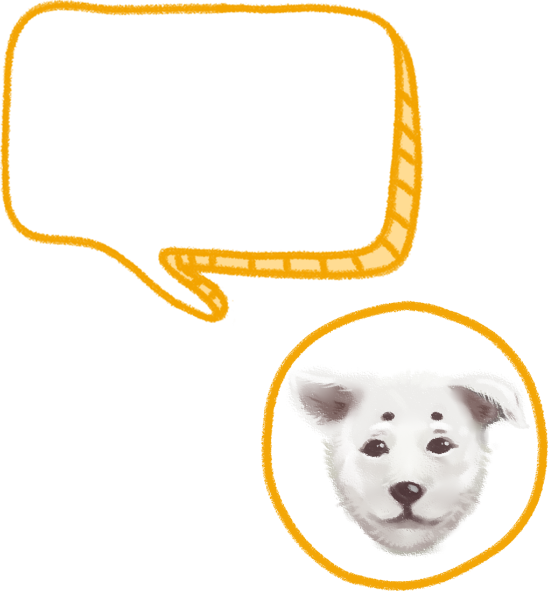
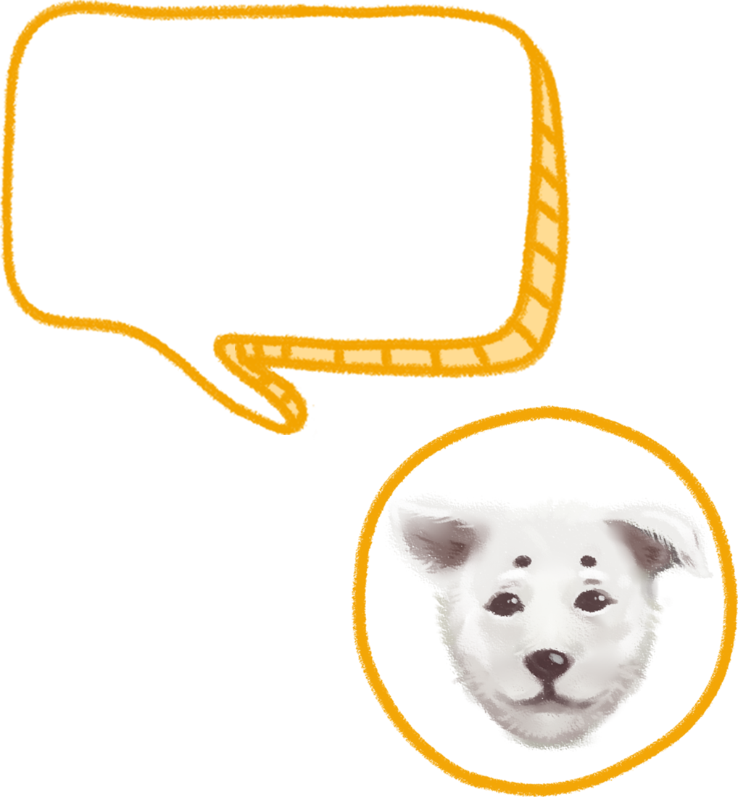
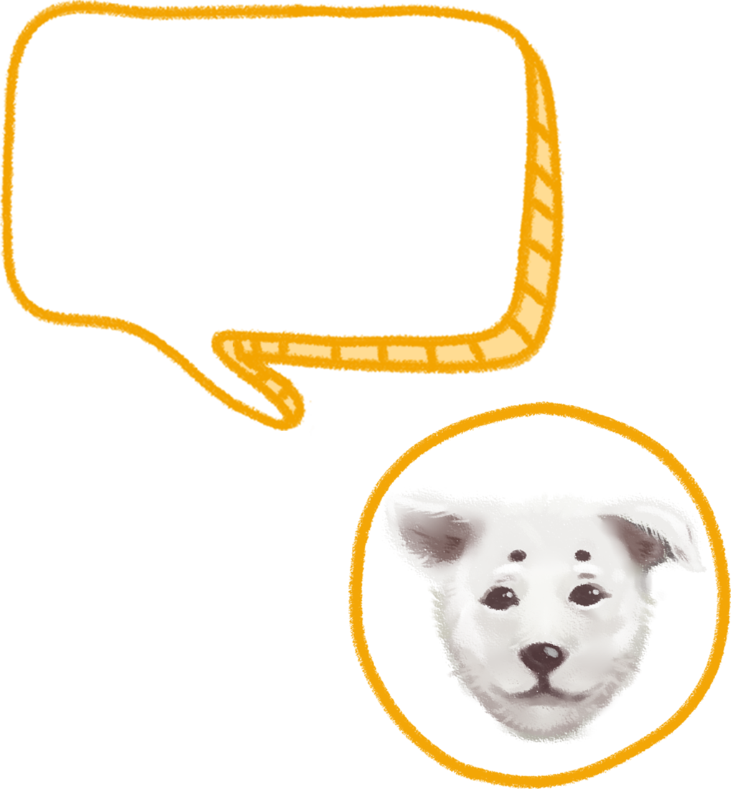
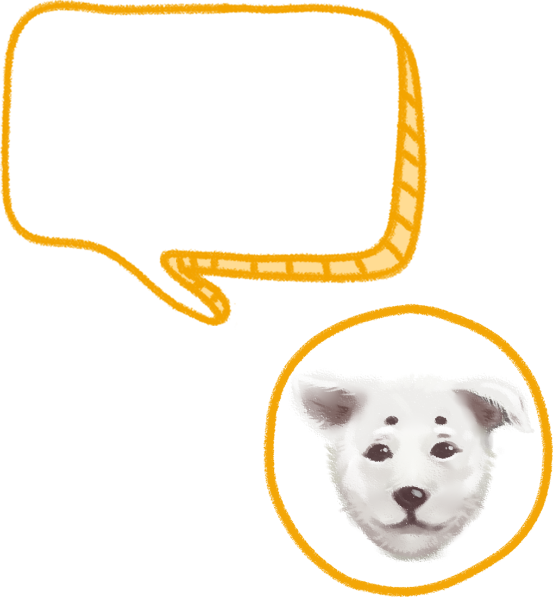

市售的飼料，已經是照狗狗的營養去調配的，照著上面的指示給狗狗食用就沒問題了。
但要特別注意有些食物不能給狗狗吃，葡萄可能會造成狗狗腎臟衰竭、巧克力的純度越高(例如烘焙用巧克力或可可粉)對狗狗的傷害就越大，大蒜和洋蔥此類蔬菜中的化合物會導致狗狗罹患腸胃炎、貧血，還會破壞紅血球。
除此之外，狗狗跟人一樣要養成定時喝水的好習慣，水是狗狗必須六大營養素之一，所以非常重要喔!切記狗是不能喝生水的!你喝甚麼水它就喝甚麼水，一定要乾淨。
依照狗狗的體型大小，來準備適合牠的床，床的大小至少能夠讓狗狗側著睡覺的時候，四肢不會擠到，高度至少可讓狗狗抬頭挺胸站在裡面。
最後，記得鋪上一層保暖、舒服又透氣的床墊，讓狗狗舒舒服服地睡覺。別忘了，要定期幫狗狗的床清洗乾淨，讓牠有個舒適的小天地。
除了日常需要的飼料碗、水碗之外，潔牙骨零食、潔耳液、剪甲刀、剃毛刀、洗毛精這些也是必備物品，而常被飼主忽略的尿布墊和玩具在挑選上也是有眉角的。
尿布墊可以依據狗狗的身形大小，來選擇尿布濕墊的尺寸。
觀察尿布墊的吸收力，觀察尿液吸收及擴散的範圍、濕氣會不會太重，如果要避免狗狗在上廁所時，頻繁走動下磨破表面，可以選材質耐用的尿布墊，也可以選除臭力佳的尿布墊，避免臭味過濃，讓人或狗狗感到不舒服。
玩具
最重要的是要根據狗狗的身形選擇玩具的大小，有無聲音也是很大的重點，
不是所有狗狗都喜歡會發出聲響的玩具，玩具建議選擇防水以及耐咬，
也可以購買一些戶外玩具與狗狗玩，例如拋接彈力球、飛盤、拉扯繩等，培養彼此感情。
狗狗其實也是很脆弱的，特別是幼犬很容易得病，這方面可以找專業的獸醫討論，首先就是接種疫苗，疫苗保護狗狗避免許多病毒和細菌。
每個月必備的除蚤滴劑或是除蚤口服藥也是不可忽略的，適用於狗狗定期的體內外寄生蟲預防外，也可以防止壁蝨、蚊子、跳蚤靠近叮咬狗狗，大幅降低寄生蟲對狗狗造成的傷害與感染，建議購買前先諮詢獸醫師評估狀況。
而寄生蟲的控制是務必要注意的，許多型別的蠕蟲會影響寵物的健康，有的甚至會傳染給家人。寄生蟲附著到狗狗的腸道上面，會引起腹瀉，嚴重的話會有生命危險。
鼻頭:鼻頭變乾燥，可能有不舒服的狀況
腳:跛腳或跳躍困難，可能有關節炎
皮膚:常常發癢或有脫毛，通常和飲食有關
耳朵:常常抓耳朵或甩頭，可能有耳蟎或寄生蟲
眼鼻分泌物:眼屎變多或常流鼻水，可能生病了
排尿量:變多變少都不正常，變少可能是泌尿道結石，變多可能有腎臟病或糖尿病
睡眠:睡眠變長可能是生病導致不想動
食慾:食慾大增卻吃不胖，可能感染腸內寄生蟲，食慾下降可能是跟人一樣心情不好，但也不能忽視
基礎理學檢驗是每一隻狗狗來到動物醫院看病時最基本的檢査。
目的是為了要讓動物醫師能夠從狗狗的外觀、身體症狀來確認狗狗健康情況。通常會配合飼主的描述，讓動物醫師做出初步的疾病判斷。
如果要更進一步檢查，也可以多做血液檢查、影像檢查。
帶狗狗散步是每天必須進行的活動，除了可以讓狗狗和主人一起出門運動，
也可以讓牠接觸外界，與其他狗狗交朋友喔!
出門前幫狗狗戴上項圈，還要隨身攜帶清理狗便便的報紙或袋子，
隨時注意狗狗有沒有亂便便。
散步時，要控制狗狗的方向，別讓牠嚇到路人、或是與其他狗狗起衝突。